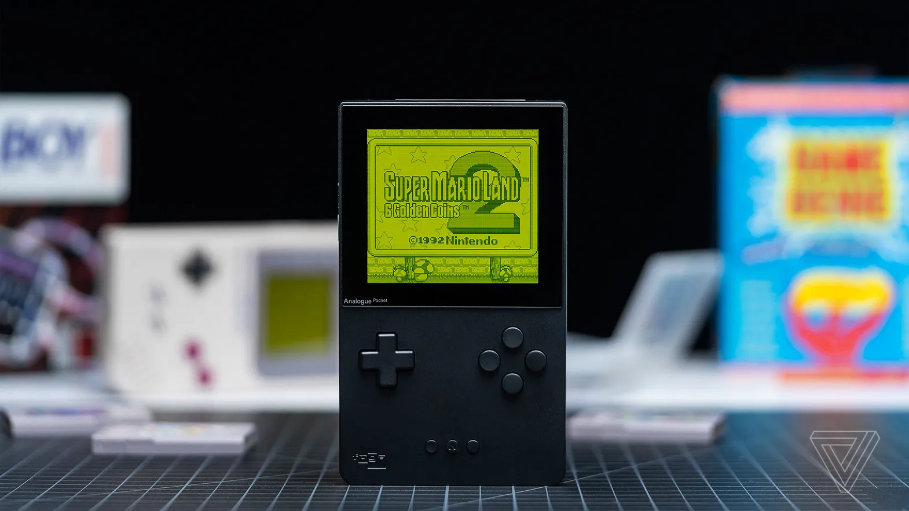

Analogue Pocket Review: Game Boy Games Have Never Looked So Good
For the last week or so, I’ve been buried in cartridges from my youth. I’ve spent hours slicing through cute blue slimes in Dragon Warrior III and reacquainting myself with a decades-old team of monsters in Pokémon Yellow. While all my friends have been raving about Halo Infinite, I’ve instead been reminding myself just how inexplicably good Tony Hawk’s Pro Skater was on the Game Boy Advance.
read more
TCL resumes selling its Google TVs after rolling out software fixes
After briefly halting sales of its 6-Series and 5-Series Google TVs due to sluggish, buggy software, TCL this evening announced that the TVs are back. “Recent software updates have allowed us to make significant improvements on the stability and speed of the TCL televisions featuring Google TV,” spokesperson Rachelle Parks said by email.
read more
Nikon Z FC review: fashion over focus
Taking photos with my 1967 35mm Nikkormat FTN makes me feel powerful. Its all-metal body with mechanical springs, gears, and levers create a loud, satisfying “clunk” with every shutter press and deep “zip” when advancing the film. Its silver metal body with black faux-leather accents has proven to be not only timeless and eye-catching but, more importantly, incredibly durable.
read more
LG’s new 16:18 monitor looks like a multitasking powerhouse
Are monitors with traditional aspect ratios just not getting the job done for you? LG might have the answer. Today the company has announced what it touts as “a completely new format in the monitor market” called the DualUp. With a unique 16:18 aspect ratio, LG claims the DualUp gives you “the same screen real estate as two 21.5-inch displays and has a vertical split view function that lets users see more in one glance.”
read more
CES 2022 loses Microsoft in Las Vegas over COVID fears
Microsoft is the latest company to drop a physical presence at CES, as the increased prevalence of COVID-19 spooks exhibitors. It joins a growing list of major companies ditching the world’s largest technology show. “After reviewing the latest data on the rapidly evolving COVID environment, Microsoft has decided not to participate in-person at CES 2022,” a company spokesperson said in an e-mailed statement
read more

Here are the best Apple Watch deals right now
Thinking about picking up a new Apple Watch? It might be tempting to order one of the new Series 7 models, but new Apple hardware always comes at a premium. The latest version of the Apple wearable offers a slightly larger display and some improvements to durability but is largely the same Apple Watch we’re familiar with.
read more